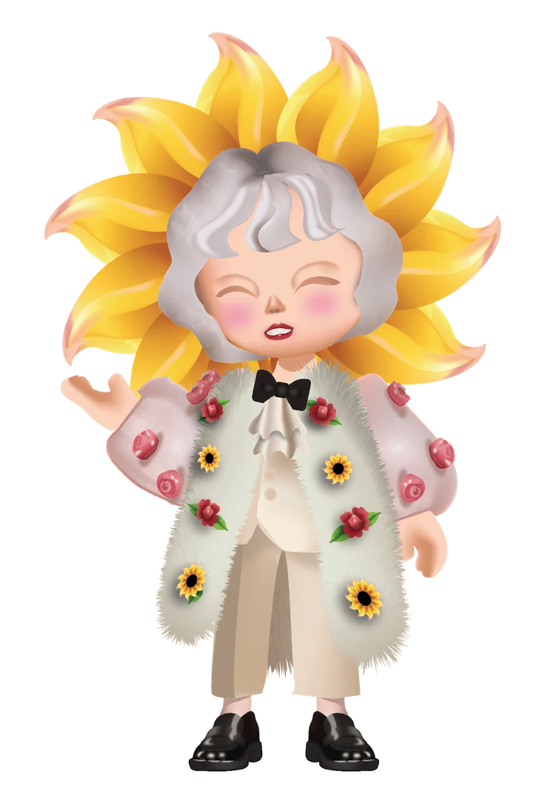
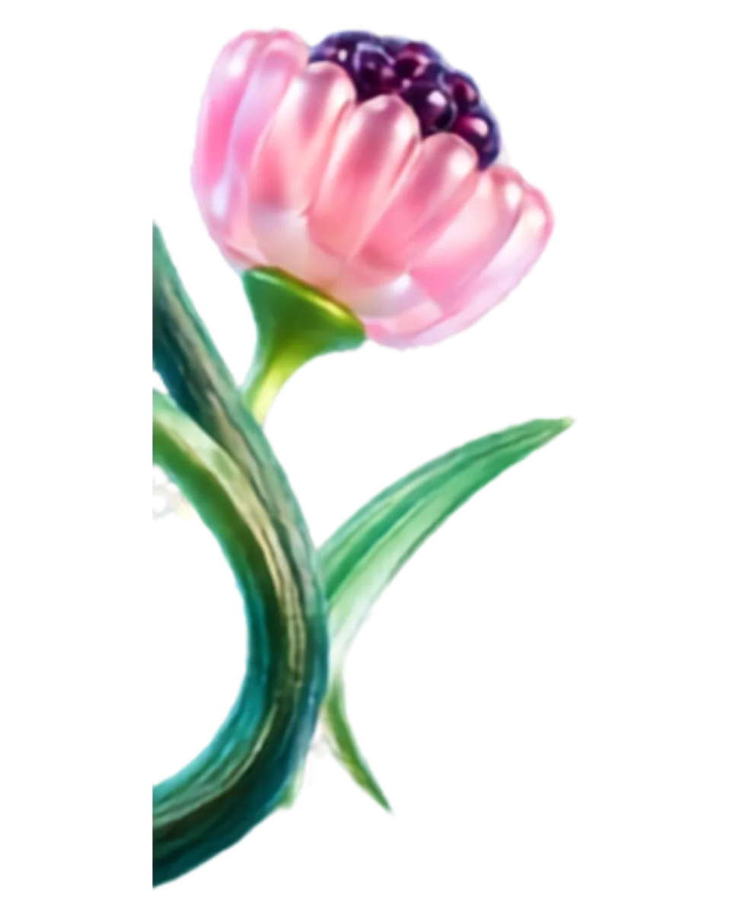
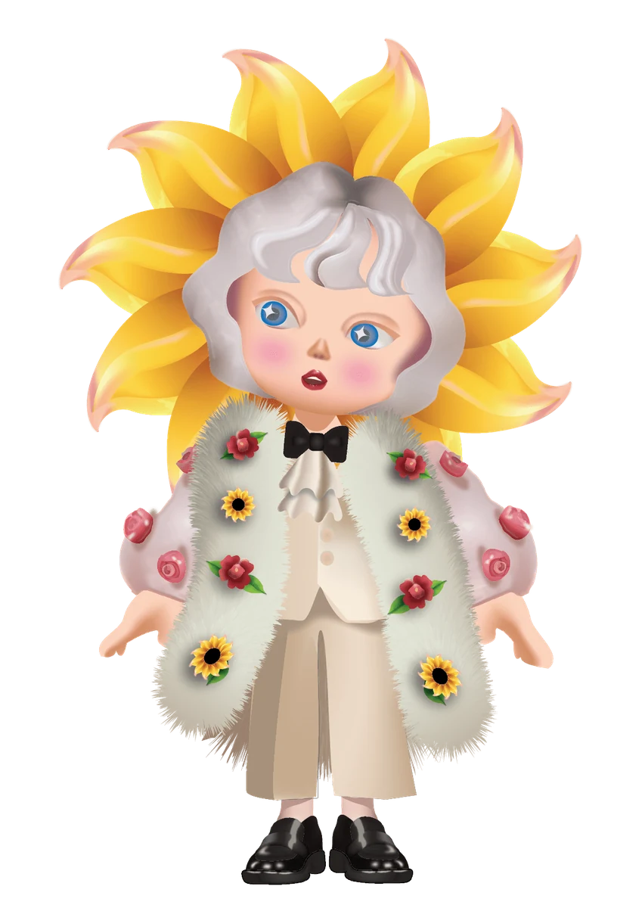
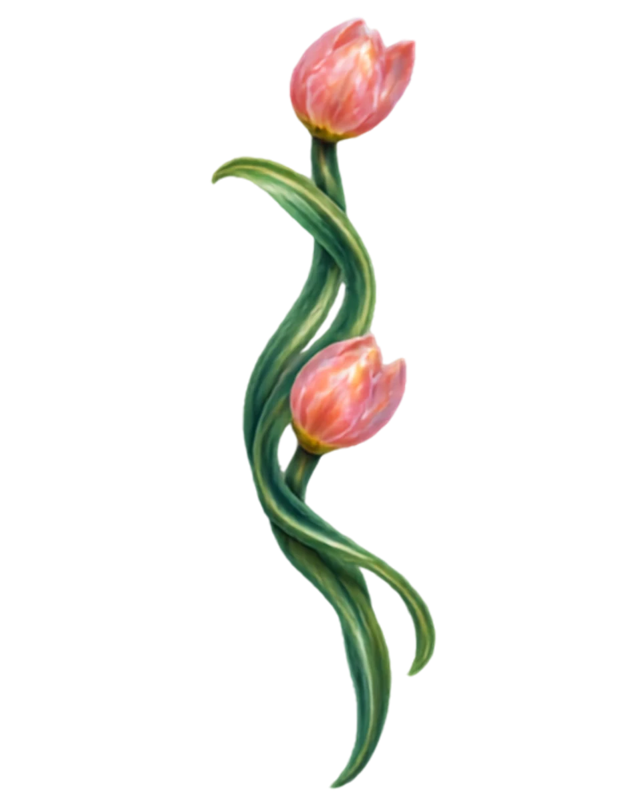
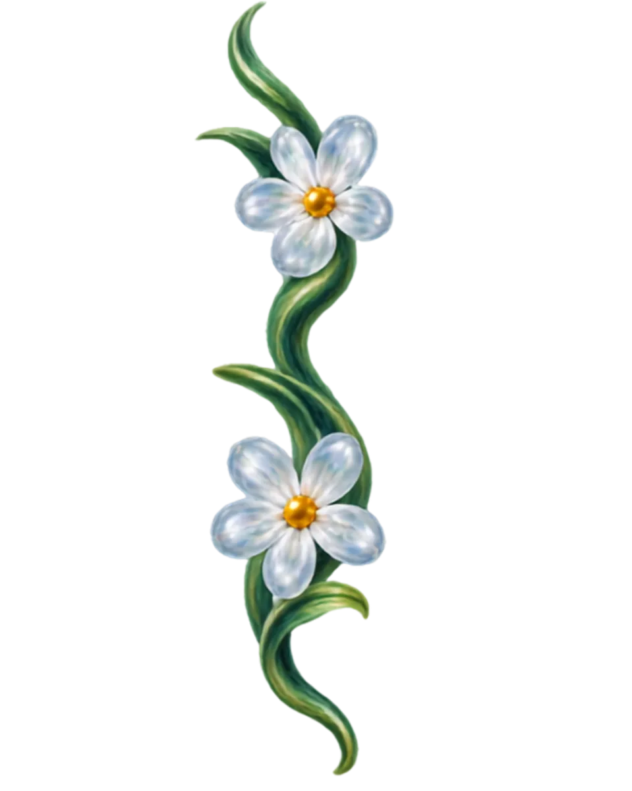

Ruang Liminal
Tiga Dunia
Tiga Dunia


Fluid State of Mind
Tiga Dunia Wajahmu
Satu wajah, tiga cara melihat dunia.
Imajinasi
Pilih duniamu.

Imajinasi
Taman kaca yang bercahaya.
Realitas
Potret apa adanya.
Surealis
Ruang di antara keduanya.


Kamera
Pas-kan wajahmu di dalam oval.
Sudah pas?
Tekan Generate untuk meracik duniamu.
Meracik duniamu
Menyatukan elemen visual dan dimensi wajahmu...